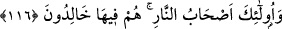
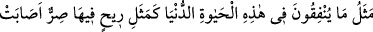
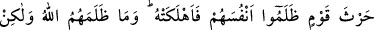
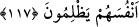

Kara adamı hamamda yıkamak beyaz yapmaz.
116. İnkâr edenler var ya, onların malları da evlâtları da Allah’a karşı kendilerine
hiçbir fayda sağlamayacaktır. İşte onlar, cehennemliklerdir; onlar orada ebedî
kalacaklardır.
Îmân etmeleri gereken şeyleri “inkâr edenlere gelince, ne malları ne de evlâtları
Allah’a” Allah’ın azabına karşı küçük de olsa “hiçbir yarar sağlamayacak,” onlardan
hiçbiri azabı def edemeyecektir.
Bu ifade, kâfirlere reddiyedir. Çünkü kâfirler: “Malları ve çocukları en çok olan
bizleriz, azaba uğratılacak da değiliz.” (Sebe’, 3/35) diyerek mallarıyla
övünüyorlardı. Hz. Peygamber (s.a.) ve ona uyanları fakir oldukları için ayıplıyor ve
şöyle diyorlardı: “Şayet Muhammed, hak üzere bulunsaydı, hiç Rabbi onu fakr-u zarûret
içinde bırakır mıydı?”
Âyet-i kerîmede, mallar ve çocukları özellikle zikredilmiştir, çünkü insan kendini
bazen malını fedâ ederek kurtarır; bazen de çocuklardan yardım isteyerek. Cansız
varlıkların en faydalısı maldır. Canlıların en faydalısı ise evlattır. Kâfir bunlardan
âhirette kesinlikle faydalanamayacağına göre, öteki şeylerden tabii ki istifade
edemeyecektir.
“Onlar,
cehennemliktir,”
devamlı
cehennemde
olacaklar,
ondan
hiç
kurtulamayacaklardır. “Onlar, orada sürekli kalacaklardır.”
Allah Teâlâ, kâfirlere, mallarının hiçbir şekilde fayda sağlamayacağını beyân edince,
kâfirlerin bazı hayır işleri için mallarını infak ettikleri durumlarda insanın aklına,
kâfirlerin bu mallardan istifade edebileceklerine dâir bir düşünce geliyor. Allah Teâlâ
bu âyet-i kerîme ile bu şüpheyi gideriyor ve bu malları infak ederken Allah’ın rızâsına
nâil olmak maksadını gütseler dahi, bu infâktan hiçbir istifadeleri olmayacağını şu
âyetle beyân ediyor:
117. Onların, bu dünya hayatında yapmakta oldukları harcamaların durumu,
kendilerine zulmetmiş olan bir kavmin ekinlerini vurup da mahveden kavurucu bir